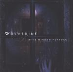

| Artist: | Wolverine |
| Title: | The Window Purpose |
| Label: | DVS Records DVS005 |
| Length(s): | 57 minutes |
| Year(s) of release: | 2001 |
| Month of review: | [04/2002] |
| 1) | End | 0.45 |
| 2) | My Room | 8.04 |
| 3) | His Cold Touch | 9.42 |
| 4) | ... | 1.52 |
| 5) | Leaving Yesterday | 7.11 |
| 6) | Towards Loss | 5.55 |
| 7) | The Storm Inside | 7.56 |
| 8) | Coma | 7.25 |
| 9) | Release | 2.12 |
| 10) | Post Life | 5.57 |
End is a brief instrumental introduction starting My Room, which immediately shows all Wolverine's style elements: the hard edged guitars, sometimes exchanged for acoustics, strong vocals with an occasional grunt. Along with these melodic elements there is also the occasional guitar riff or keyboard run going against the grain.
His Cold Touch has an intro of a somewhat sentimental sounding ballad, but the vocals break this spell. These vocals create a slow build up towards an instrumental section that's not completely free of experimentation and comes to full fruition with a keyboard and guitar duel. The contrast between the various parts of the track along with the strong hammond background keys give His Cold Touch more profile. Good one.
... is an instrumental intermezzo, featuring bass, acoustic and electric guitars. Nice track, but not really striking.
Leaving Yesterday starts of with a strong, melodic intro, moving into a vocal part with female vocals. The ghost of Pain Of Salvation is very present in this track, especially in the way sections of the track flow over. Jansson's presence gives this track a more open feel, less dark than others. This culminates in the climatic yet melodic guitar solo at the end.
Towards Loss starts with almost sounds like a musical box, building up slowly to a very wall of soundlike intro. The first vocal utterance is a grunt, soon joined by Zells vocals, though. Despite the layered vocals which remind me of Pain Of Salvation (again), this track does have a more rocky melodic feel to it.
The Storm Inside starts with a long intro, after which the vocals slowly build up to an intermediate climax, with once the strong hammond sounds carrying the track. After having ventilated some of the tension the track moves from a somewhat jazzy intermezzo into another strengthy section.
Coma has a strong into interspersed with a beep sounding like that of a heart machine. Once again the vocals are started with grunt. Along with the choppy and dry drum sound in the back, an atmosphere is created that doesn't exactly fit the subject of the song (somebody having a near death experience while in coma, longing for the end of a life that is now only suffering). The instrumental section sees the return of the heart machine, with shards of voices layered across, much more fitting. Good to see that somebody takes up this subject of euthanasia for those whose life is no longer anything but suffering.
Release is another intermezzo. Acoustic guitar, piano and drums quitely moving along. The booklet also has the quote 'welcome, death! How nice to finally meet you' inscribed, which suggests that this track is the coda of Coma.
Post Life is a track with a bit of an unplugged feel, starting with just acoustic guitars, vocals and percussion.